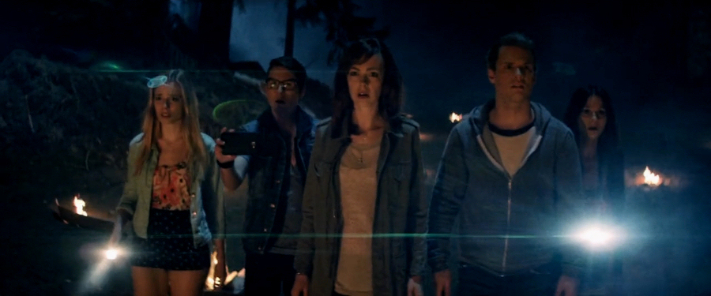
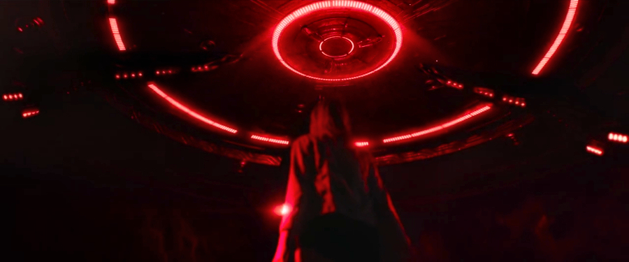
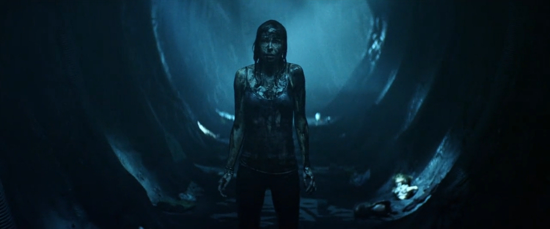

Extraterrestrial (formerly known under the working title ‘The Visitors’) is a sci-fi horror film based on a script by The Vicious Brothers that was directed by Colin Minihan and jointly produced by three production companies: Abduction Films, Manis Film and Pink Buffalo Films. The movie saw its world premiere in April 2014 at the Tribeca Film Festival and was later released on Blu-ray and DVD by The Scream Factory.
Still recovering from her parents’ divorce, April (Brittany Allenn) is pulled back by the fond memories to the vacation cabin she spent many a summer holiday at as a child. She is accompanied by her boyfriend of three years Kyle (Freddie Stroma) and a group of three friends: Seth (Jesse Moss), Lex (Anja Savcic) and Melanie (Melanie Papalia).
Not long after their arrival at the cabin, the friends see a strange fireball falling from the sky and crashing in the woods. Upon investigating the crash site, they find to their utter astonishment, that it is a UFO. They also discover humanoid footprints leading from the alien craft into the woods. The considerably freaked-out friends hastily return to the cabin, and once there, upon hearing footsteps upstairs, retreat to the cellar, where they arm themselves with a shotgun. After they gingerly return to the main room of the cabin, April, startled by a grey, non-human figure standing on the patio, fires the shotgun through the glass door. When the friends examine the outside, they find a body of a clearly extraterrestrial being floating on the surface of the swimming pool.
The five decide the safest thing will be to drive to the town, but find that the only road is blocked by a smoothly-cut fallen tree. From this point on their vacation takes a sinister turn. Out of the blue, a UFO appears, starts hovering above their car, and then abducts Lex, who, as if mesmerised, exits the vehicle before being hoisted up and into the spacecraft by a pale, bluish light-beam. The rest of the group flee to the house of April parents’ old friend, Travis (Michael Ironside). Travis, a survivalist and conspiracy-theorist, believes that the U.S. government and the aliens are in cahoots since the Roswell Incident: The government turns a blind eye and lets the aliens to conduct their inhumane experiments on abductees, and, in return, the technologically superior aliens let the government to keep the appearances of being in charge of the Earth. They only have one rule – no human must ever engage them – and now, after April shot one of them, they are out for blood.
After the aliens infiltrate also Travis’s house, the youngsters escape back to the cabin, where they board up all the doors and windows, while Travis stays behind to fight the invaders, only to get either killed or abducted. After seeing eerie lights seeping through the boarded windows, Seth shoots at the silhouette in the doorway, mistaking Sheriff Murphy (Gil Bellows) for an alien, and is arrested for assaulting a police officer. It transpires that Sheriff Murphy's wife disappeared some ten years ago in mysterious circumstances and now, after listening to Seth’s account of events, he starts to believe that the aliens were responsible. As Sheriff Murphy and Deputy Mitchell (Sean Rogerson) argue about the cause of Murphy’s wife disappearance, an alien appears in front of the car and manipulates Murphy’s mind so that he shoots Deputy Mitchell before turning the gun on himself and blowing his brains out.
Following that, the alien is trying to get at Seth, handcuffed in the back of the police car, but he is saved at the last moment by April, and the friends retreat back into the cabin. While Kyle, April and Melanie decide to stay in the cabin and make a stand, Seth, crazed with fear, runs out into the woods, where he is taken by the aliens. Kyle hides April and Melanie in the basement and barricades the door, hoping that the aliens won’t find them there, and then arms himself with a kitchen knife and hides in the bathroom, ready to ambush the aliens.
In the meantime in the cellar, desperate Melanie, who would do anything to prevent the aliens from capturing her, takes an overdose of sleeping pills and dies in April’s arms. Desperate April, armed with a crowbar, decides to leave her hideout and face the aliens, but she finds that they are already leaving, having taken Kyle with them. Suddenly realising that she cannot live without her lover, April sets off a firework in the direction of the ascending UFO, hoping to attract the attention of the departing aliens. At first, it seems that she failed, but just when she is about to give up the hope that she will ever see her boyfriend again, the UFO turns around, returns to the cabin and lifts her aboard.
April wakes up and realises that she is no longer on Earth. She frees herself from the slime she is covered in and starts exploring her surroundings. What she finds, is tunnel after tunnel filled with slime-pods, most occupied by abducted humans in various stages of biological experimentation they were subject to. Against all the odds, she manages to locate Kyle in one of these pods and revives him from his stupor. Alas, their captors have already noticed their bid for freedom, caught up with them, and now are blocking the only escape route. Abandoning all hope, and fearing the worst, the couple lose their consciousnesses. When they later wake up, they are astounded to find themselves not in the alien operating theatre, but in a lush forest back on Earth. Pleasantly surprised and overwhelmed with joy, the couple embraces, just as they are being approached by armed men dressed in military fatigues and wearing gas masks. Little they realise that their ordeal is far from over and that the government will stop at nothing to protect its secrets...

◈ ◈ ◈
Similarly to other recently released alien-abduction-themed low-budget flicks (Alien Abduction, Dark Skies), Extraterrestrial exploits possibly every tired cliché of sci-fi horror movies there is, although what sets it apart from the rest is its light-hearted take on them (watch out especially for the (very) dark-humour, tongue-in-cheek, Anal Probe and Smoking Man references).